Fundamentals of OGA
多人在线游戏(multiplayer online gaming)的挑战
-
一致性(consistency)：网络同步

-
可靠性(realibility)：
- 网络延迟
- 断开(drop)和重连
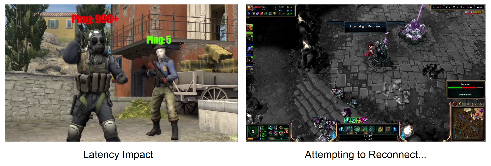
-
安全性(security)
- 作弊
- 账号入侵
-
多元性(diversities)
- 跨平台
- 快速迭代
- 多人游戏系统

-
复杂性(complexities)
- 高并发
- 高可用性
- 高性能
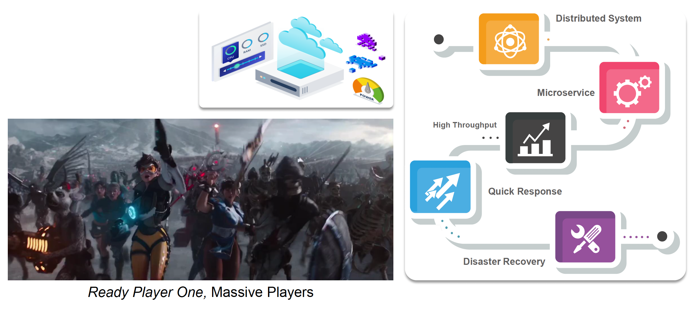
Network Protocols
因特网之父：Vint Cerf 和 Robert Kahn，他们设计了 TCP/IP 协议和因特网架构。
两台 PC（记作 A、B）要想相互通信(communicate)，A 和 B必须在多个不同层面上就发送和接收的比特的含义达成一致，包括：
- 用什么电平来表示比特 0 和比特 1？
- 接收者如何知道最后一个比特？
- 一个数字用多长比特表示？
如果直接让机器通过传输介质通信，就会遇到两个问题：
- 为每种新的底层传输介质重新实现应用程序？
- 在底层传输介质发生变化时更改应用程序？
这样做显然不现实。因特网的解决方法是通过引入一个中间层(intermediate layer)（一般有多层）来避免上述问题。中间层提供了一组关于应用程序和介质的抽象，这样新的应用程序或介质只需实现中间层接口即可。
一种经典的分层方法是 OSI 模型，它将中间层分为 7 层，自顶向下包括：

- 应用层：为用户提供功能
- 表示层：转换不同表示
- 会话层：管理任务对话
- 传输层：提供端到端的传输
- 网络层：通过多个链路发送数据包
- 数据链路层：发送信息帧
- 物理层：将比特作为信号发送
Socket
但对大多数游戏开发者而言，不需要通过这种复杂的机制实现通信。我们往往用到一种基于网络套接字(socket)的方法，它是计算机网络中网络节点内的软件结构，作为网络发送和接收数据的端点。可以把它简单看作 IP 地址 + 端口号的结合。
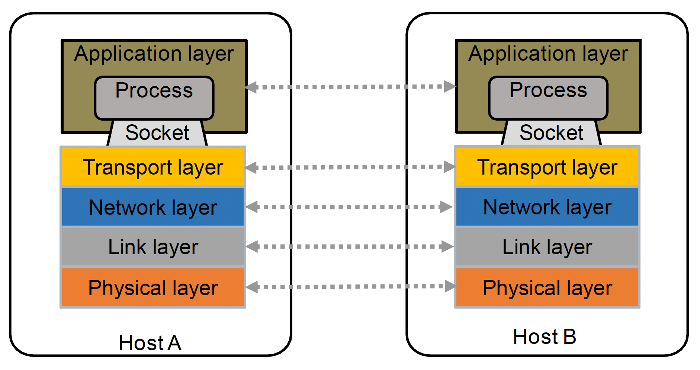

客户端和服务端都需要设置套接字。函数签名如下：
int socket(int domain, int type, int protocol)
取值分别为：
domain：AF_INET（IPv4）或AF_INET6（IPv6）type：SOCK_STREAM（TCP）或SOCK_DGRAM（UDP）protocol：默认置 0
例子：
#!cpp int sockfd = socket(AF_INET, SOCK_STREAM, 0)
其中值得一提的是两个著名网络协议：TCP 和 UDP
-
TCP（传输控制协议(transmission control protocol)）
-
特点：
- 面向连接的
- 可靠且有序
- 流量控制
- 拥塞控制
-
TCP 段头：
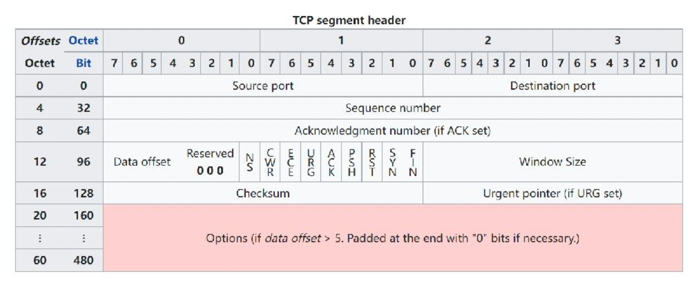
-
重传机制：重复 ACKs（确认）
- 发送者发送数据包和序列号，比如 1, 2, 3, 4, 5, 6, 7, 8
- 假设第 5 个数据包丢失，那么 ACK 流为 1, 2, 3, 4, 4, 4, 4, 4
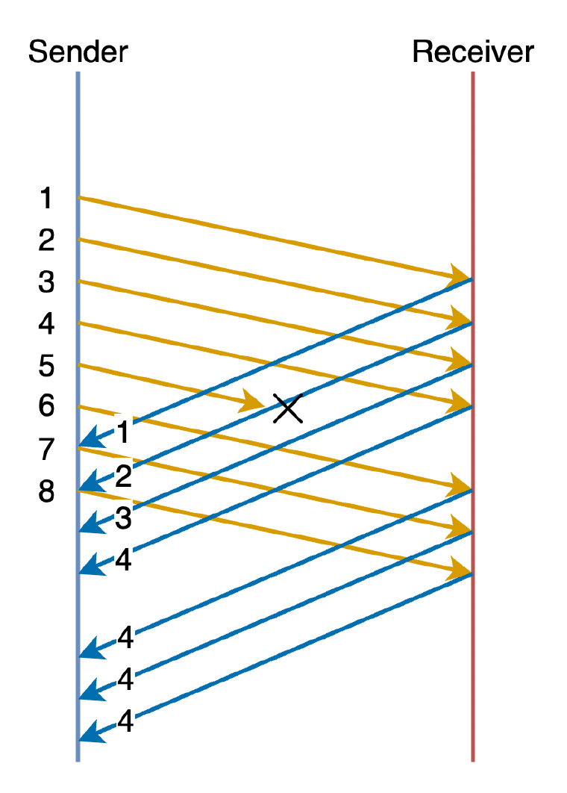
-
拥塞控制(congestion control)：
- TCP 的拥塞窗口（CWND）从一个小值开始增长
- 当发生拥塞、数据包丢失或超时时，将根据某种算法减少 CWND 值
- 这会导致高延迟并造成延迟抖动
- 拥塞控制是必要的，否则会导致拥塞崩溃；TCP 拥塞控制是互联网主要的拥塞控制措施，也是 TCP 性能问题的主要原因

-
-
UDP（用户数据报协议(user datagram protocol)）
-
特点：
- 无连接
- 不可靠且无序
- 无流量控制
- 无拥塞控制
-
UDP 数据包头部：
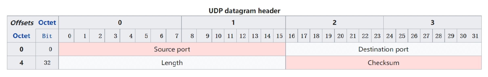
-
网络协议在游戏中的使用情况：
- TCP：《炉石传说》(HearthStone)...
- UDP：《守望先锋》(Overwatch)《CSGO》...
但实际上对于一款大型 MMO 游戏，可能会用到多种协议的组合。
TCP 和 UDP 的问题
- TCP 不注重时间
- 它是一个复杂且重量级的协议，虽然提供可靠的传输和高级功能，但开销更大
- 它还是一个公平的、面向流量的协议，旨在提高带宽利用率，但并不是为速度而设计的
- UDP 虽然快，但不可靠，丢包和乱序问题经常发生
Reliable UDP
甚至在现代游戏中，我们会对已有的协议进行改造。之所以要改造，是因为：
- 游戏服务器
- 保持活跃连接（TCP）
- 需要保持“顺序”中的逻辑一致性（TCP）
- 高响应和低延迟（UDP）
- 经常用到广播(broadcast)（UDP）
- 网络服务器
- 处理 HTTP 协议
- 提供静态网页内容，比如 HTML 页面、文件、图像、视频等
可以看到，我们想要一种同时结合 TCP 和 UDP 优点的协议。为了能够实现这样的协议，先来认识两种网络技术—— ARQ 和 FEC。
Automatic Repeat Request
确认(acknowledgement, ACK)与序列号
- 正 ACK：在通信进程、计算机或设备之间传递的信号，用以表示确认或收到消息
- 负 ACK（NACK）：发送用于拒绝之前接收到的消息或指示某种错误的信号
- 序列号（SEQ）：用于跟踪主机发送字节的计数器
- 超时(timeouts)：在接收确认之前允许等待的指定时间段
自动重传请求(automatic repeat request, ARQ)是一种用于数据传输的错误控制方法，利用 ACK 和超时，在不可靠的通信通道上实现可靠的数据传输。如果发送者在超时前没有收到 ACK，它会重新发送数据包，直到收到确认或超过预定义的重传次数。
ARQ 有多种实现算法，它们大多属于滑动窗口协议(sliding window protocol)，具有以下特点：
- 一次发送多个帧，帧数取决于窗口大小
- 每个帧用序列号编号
- 当窗口前方的帧被接收时，窗口向前滑动
例子
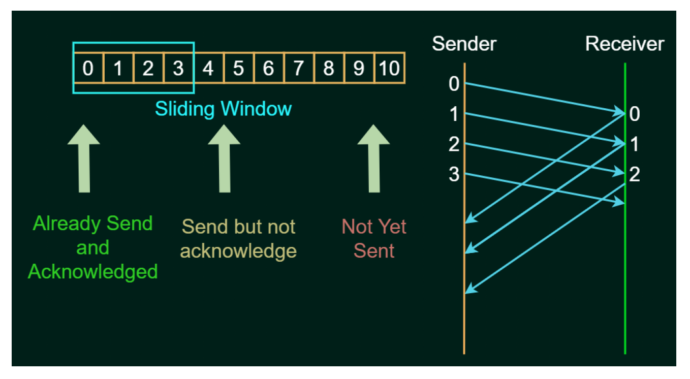

下面详细介绍其中几种常见的算法。利用这些算法中的任意一种，我们便能搭建一个可靠的 UDP。
-
停止-等待(stop-and-wait) ARQ
- 窗口大小 = 1
- 发送一个帧后，发送方在传输下一个帧之前等待 ACK
- 如果在一定时间后没有收到 ACK，发送方超时并重新发送原始帧
- 问题：带宽利用率低，性能差
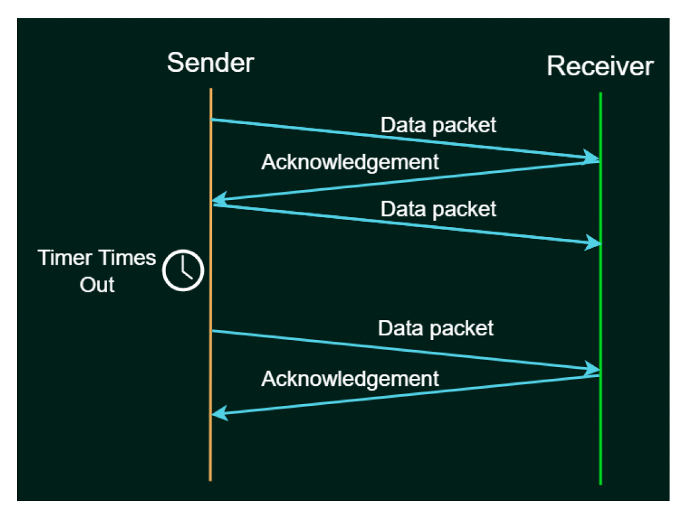
-
回退 N 帧(go-back-N) ARQ
- 发送窗口大小 = N
- 接收者仅发送累积(cumulative) ACKs
- 如果在约定时间内未收到 ACK，当前窗口中的所有帧将被传输
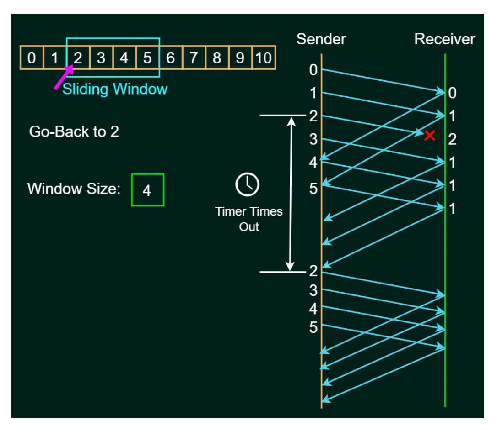
-
选择重传(selective repeat) ARQ
- 只有损坏或丢失的帧会被重传
- 接收方发送每个帧的确认，发送方维护每个帧的超时时间
- 当接收方收到损坏的包时，它会发送一个 NACK，发送方将发送/重传收到 NACK 的帧

Forward Error Correction
随着丢包率和延迟的增加，即便是可靠 UDP 也逐渐无法满足传输要求，比如当丢包率增加到 20% 时，使用可靠 UDP 仍然会有较高的延迟。这时我们引入第二种技术：前向纠错(forward error correction, FEC)。它通过传输足够的额外冗余信息与主数据流，在一定程度上重建丢失的 IP 数据包。
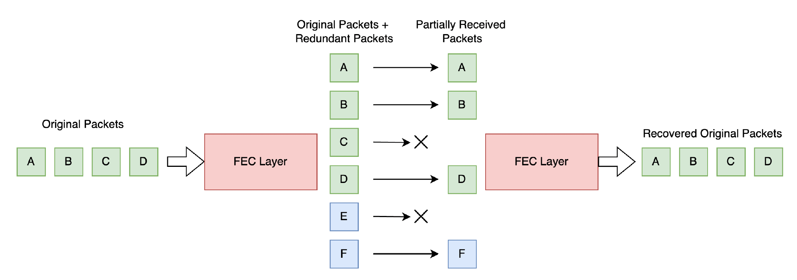
FEC 算法以额外带宽为代价降低了丢包率，并且数据包丢失率越高，数据包丢失补偿的效果更为明显。下面介绍其中两种实现。
-
XOR FEC
XOR 运算
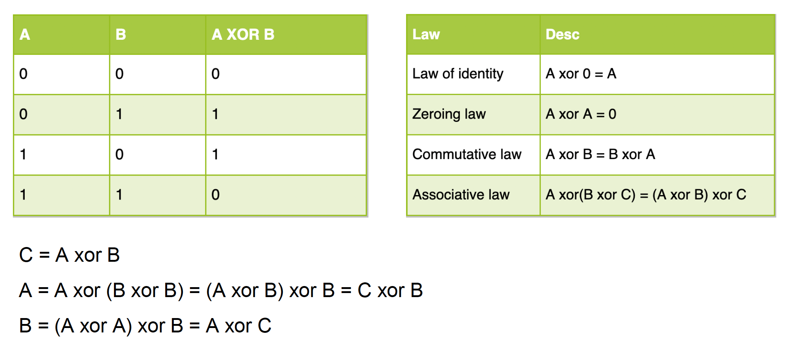

- 假如有 4 个数据包 A, B, C, D，令：
- E = XOR(A, B, C, D)
- A = XOR(B, C, D, E)
- B = XOR(A, C, D, E)
- C = XOR(A, B, D, E)
- D = XOR(A, B, C, E)
- 若任意一个包丢失，都可通过其余四个包恢复
- 若丢失多个包，该算法无能为力
- 该算法和某个等级的 RAID 很像
- 假如有 4 个数据包 A, B, C, D，令：
-
Reed-Solomon 编码
-
假如有 N 份有效数据，期望产生 M 份 FEC 数据

- 将 N 份有效数据形成一个单位向量 D
- 生成一个变换矩阵(transformation matrix) B：它由一个 N 阶单位矩阵和一个 N * M 的 Vandemode 矩阵（由矩阵 B 的任意 n 行组成的矩阵是可逆的）组成
- 通过将矩阵 B 和向量 D 相乘得到的矩阵 G 包含 M 个冗余的 FEC 数据
-
假设 D1, D4, C2 丢失
-
矩阵 B 也需要删除相应的 M 行以获得变形矩阵(deformation matrix) B'

-
得到 B' 的逆矩阵 B'-1
-
两边同乘以 B'-1 以恢复数据
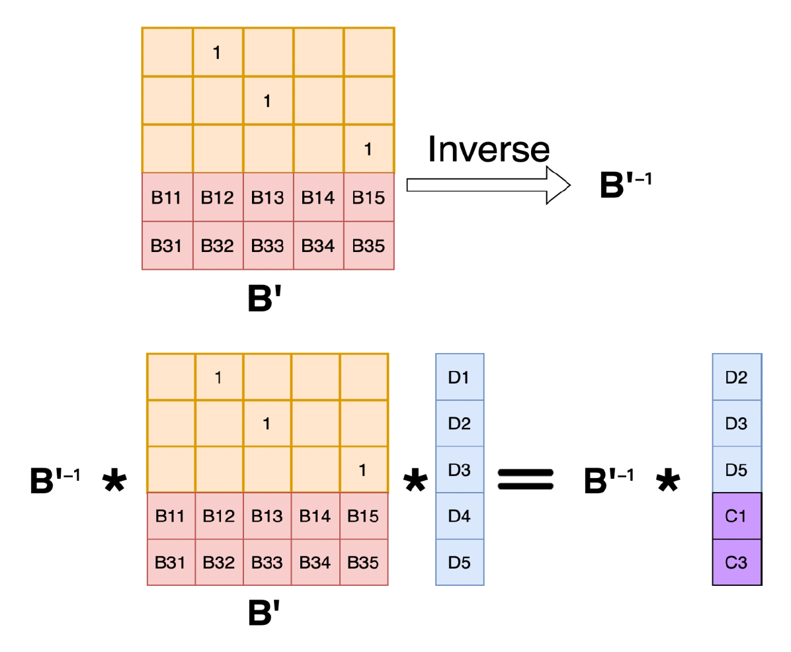
-
-
现在我们用前面介绍的技术来定制自己的 UDP 协议：
- 可靠性：采用选择重传 ARQ
- 混合 ARQ 和 FEC：在采用 ARQ 前，先用 FEC 纠错
- 实时：
- 更小的 RTO 增长
- 无拥塞控制
- 快速重传机制
- 无延迟 ACK
- 灵活性：
- 设计高速协议
- 同时支持可靠和不可靠的传输
Clock Synchronization
时钟同步(clock synchronization)是设计网络游戏时必须考虑的一件事，即确保同一场景、同一时间中的多名玩家感知到的事件是相同的。
这里涉及到一个叫做 RTT（往返时间(round-trip time)）的概念，它反映了：
- 发送/接收延迟
- 传播延迟
- 源服务器的响应时间
RTT 和其他技术/概念的关系
- PING：通常在采用 ICMP 数据包的传输协议中进行 PING 测试，RTT 在应用层中被测量
- 时延(latency)：数据包从发送端点到接收端点所需的时间（1/2 * RTT）

Network Time Protocol
实现时间同步的一个最经典的方法是网络时间协议(network time protocol, NTP)。它是一种用于与网络中计算机时钟时间源同步的互联网协议。
- 参考时钟(reference clock)：GPS 时钟、无线电发射站或诸如原子钟等极其精确的计时设备
- 无需连接到互联网
- 通过无线电或光纤发送时间
-
时间服务器层(time server stratums)：
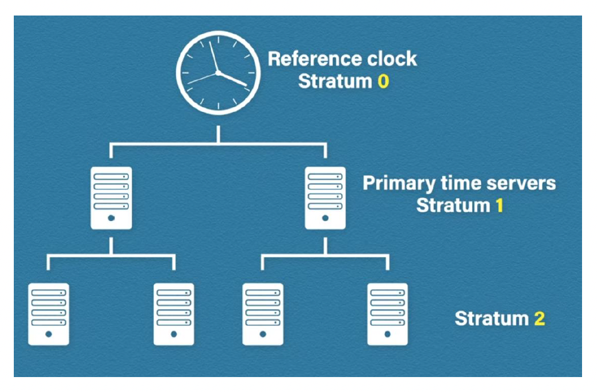
- 计算与参考时钟的分离度
- 参考时钟的等级值(stratum value)为 0
- 等级值为 1 的服务器称为主时间服务器(primary time server)
- 如果一个设备的等级值超过 15，其时间不可信
- 设备在修正时间时会自动选择等级值较低的服务器
NTP 算法的实现如下：
-
使用 NTP 很简单，只需
- 客户端向服务器请求时间
- 服务器接收请求并回复
- 客户端接收回复
- 但得考虑延迟问题
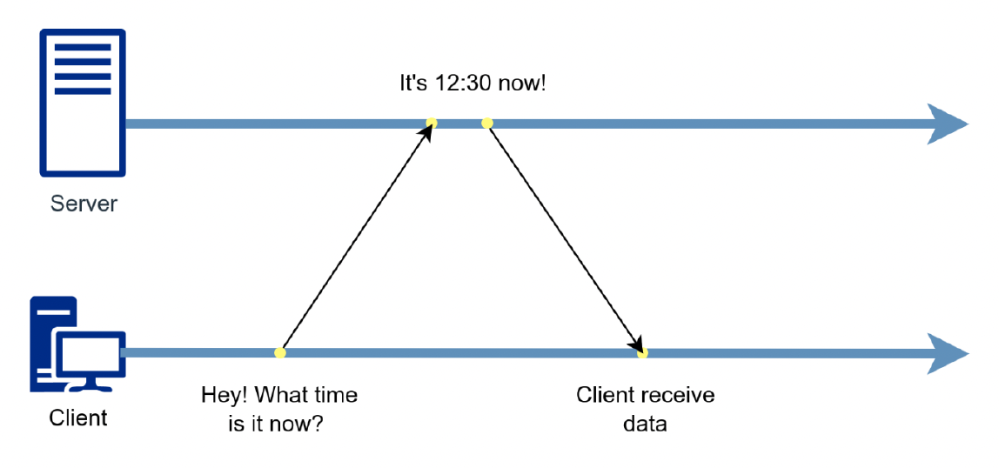
-
记录 4 个时间戳 \(t_0^c, t_1^s, t_2^s, t_3^c\)，分别对应发送请求、接收请求、发送回复和接收回复的时间
- 往返延迟 = \((t_3^c - t_0^c) - (t_2^s - t_1^s)\)
- 偏移量 = \(\dfrac{t_1^s - t_0^c + t_2^s - t_3^c}{2}\)
- 隐含的假设是单向延迟是往返延迟的一半
- 本地时钟校正是通过偏移数据计算得出的，即 \(t_3^c\) + 偏移量
- 获得的延迟和时钟偏移样本可以使用最大似然技术进行过滤
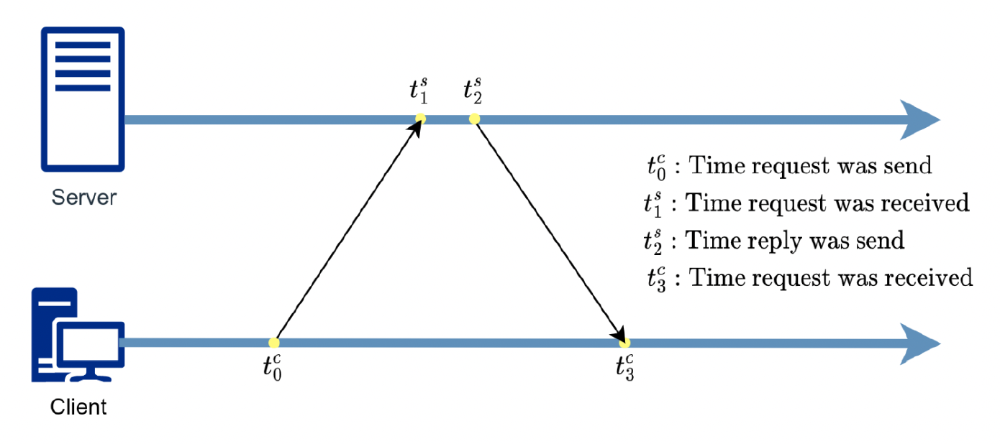
例子
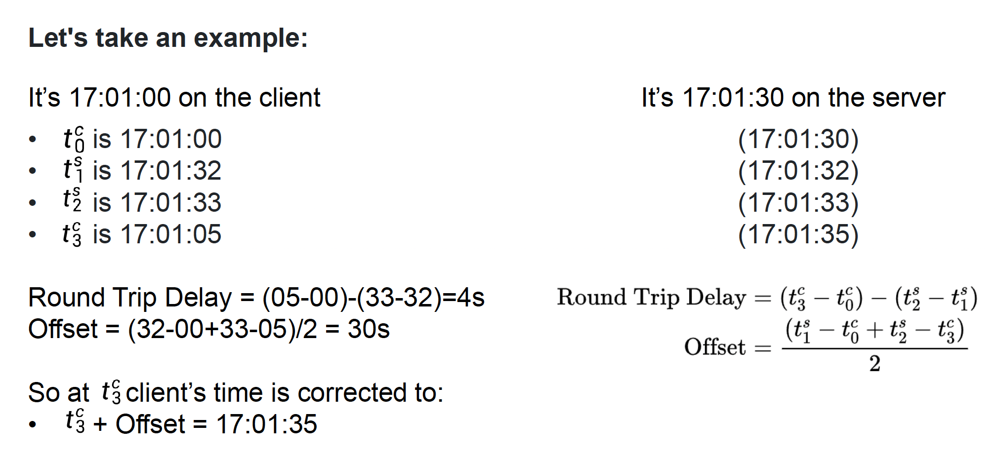
Stream-Based Time Synchronization with Elimination of Higher Order Modes
一种更精密的时钟同步做法是基于流的时间同步与高阶模式的消除：
- 客户端在「时间请求」包上记录当前本地时间，并发送给服务器
- 服务器收到后，记录服务器时间并返回
- 客户端收到后，通过 delta = (当前时间 - 发送时间) / 2 计算时间差
到目前为止和 NTP 算法很像。
- 第一个结果应立即用于时钟更新
- 客户端重复步骤 1-3 五次或更多
- 累积并按延迟升序排序数据包接收的结果
- 丢弃所有超过中位数 1.5 倍的数据样本，剩余样本使用算术平均数进行平均

Remote Procedure Call (RPC)
即便套接字编程简化了计算机间的通信处理，但在游戏开发中还是不太好用，我们还需要考虑很多东西：
- 如何在同一连接上区分不同的请求？
- 如何将字节写入网络/从网络读取字节？
- 如果主机 A 的进程是用 Go 编写的，而主机 B 的进程是用 C++ 编写的怎么办？
- 那些字节该如何处理？
另外，我们还要用套接字定义多种消息(message)，这是客户端和服务器常用的通信方式。
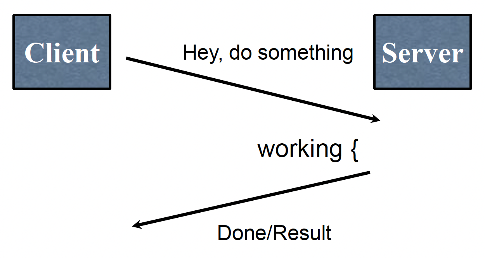
起初，程序员通过硬编码的方式定义用于发送请求和响应的消息。这样的消息被看作是一个字节流，包含了操作码和操作数信息。
例子
struct foomsg {
uint32_t len;
};
void send_foo(char *contents) {
int msglen = sizeof(struct foomsg) + strlen(contents);
char buf = malloc(msglen);
struct foomsg *fm = (struct foomsg *)buf;
fm->len = htonl(strlen(contents));
memcpy(buf + sizeof(struct foomsg),
contents,
strlen(contents));
write(outsock, buf, msglen);
}
问题
- 需要关心消息格式
- 必须对消息中的数据进行打包和解包
- 服务器必须解码消息并将它们分派给处理函数
- 消息通常是异步的
- 发送一个消息后，直到收到响应前要做什么
- 消息不是一个自然的编程模型
关于逻辑通信的更多挑战
远程过程调用中，远程机器可能：
- 运行用不同语言编写的进程
- 使用不同大小的数据类型表示
- 使用不同的字节序（大小端(endianess)）
- 以不同的方式表示浮点数
- 有不同的数据对齐要求（例如，4 字节类型仅从 4 字节内存边界开始）
远程过程调用(remote procedure call, RPC)是一种请求-响应协议。RPC 由客户端发起，客户端向已知的远程服务器发送请求消息并提供参数，以执行指定的过程。其目标是：
- 让编程更简单
- 隐藏复杂性
- 建立对程序员来说更熟悉的模型（只需调用函数）
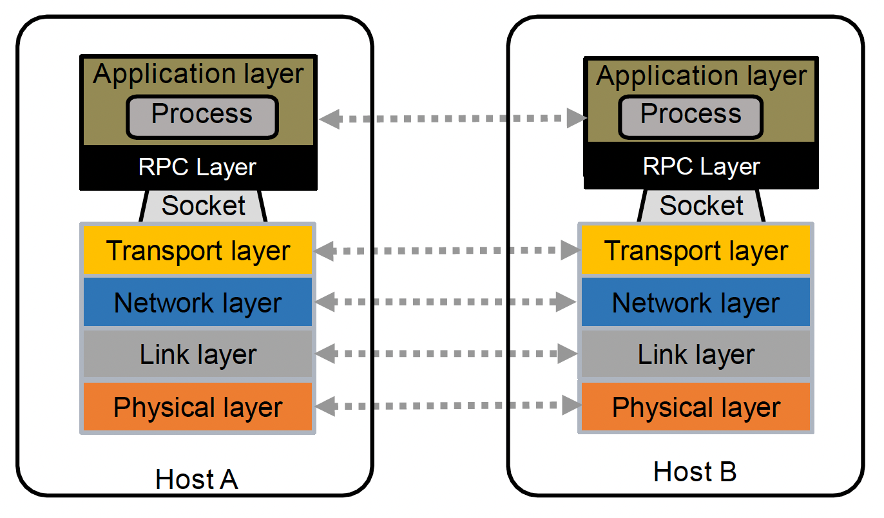
例子（Go 语言）
注意两段程序高亮的两行之间的关系。
| Client | |
|---|---|
1 2 3 4 5 6 7 8 9 10 11 12 13 14 15 16 17 18 19 20 | |
| Server | |
|---|---|
1 2 3 4 5 6 7 8 9 10 11 12 13 14 15 16 17 18 19 20 21 22 23 24 25 26 27 | |
输出：Hello World
为什么用 RPC？
目标：实现易于编程的网络通信，使客户端和服务器之间的通信透明。
-
保留编写集中式(centralized)代码的「感觉」
- 程序员无需考虑网络
- 使通信看起来像本地的过程调用
-
无需担心网络序列化/反序列化的问题
- 也无需担心网络的复杂性
这里涉及到一个叫做接口定义语言(interface definition language, IDL)的概念。它指定了所有客户端可调用的服务器过程的名称、参数和类型。服务器便用它来定义服务接口。
例子
- OSI 参考模型的 ASN.1
-
Google Protobuf：Google 的数据交换格式（介绍工具链的模式(schema)时提到过）
polyline.protosyntax = "proto2"; message Point { required int32 x = 1; required int32 y = 2; optional string label = 3; } message Line { required Point start = 1; required Point end = 2; optional string label = 3; } message Polyline { repeated Point point = 1; optional string label = 2; }
客户端与服务器之间的通信还有一种叫做 RPC 存根(stubs)的中间层。

-
客户端存根是一个看起来像可调用服务器过程的程序
- 客户端程序认为它在调用服务器，但实际上它在调用客户端存根
-
服务器端存根看起来像是对服务器进行调用的调用者
- 服务器程序认为它被客户端调用，但实际上它是由服务器端存根调用的
-
存根之间通过发送消息使 RPC 透明发生
另外还会用一个「存根编译器」(stub compiler)读取 IDL 声明，并为每个服务器过程生成两个存根程序
- 服务器程序员实现服务的过程，并将其与服务器端存根链接
- 客户端程序员实现客户端程序，并将其与客户端存根链接
- 由存根管理客户端和服务器之间远程通信的所有细节
一段真实的 RPC 包传输过程

Network Topology
P2P
一种曾在对战游戏中常用的经典网络拓扑结构是点对点(peer-to-peer, P2P)架构。
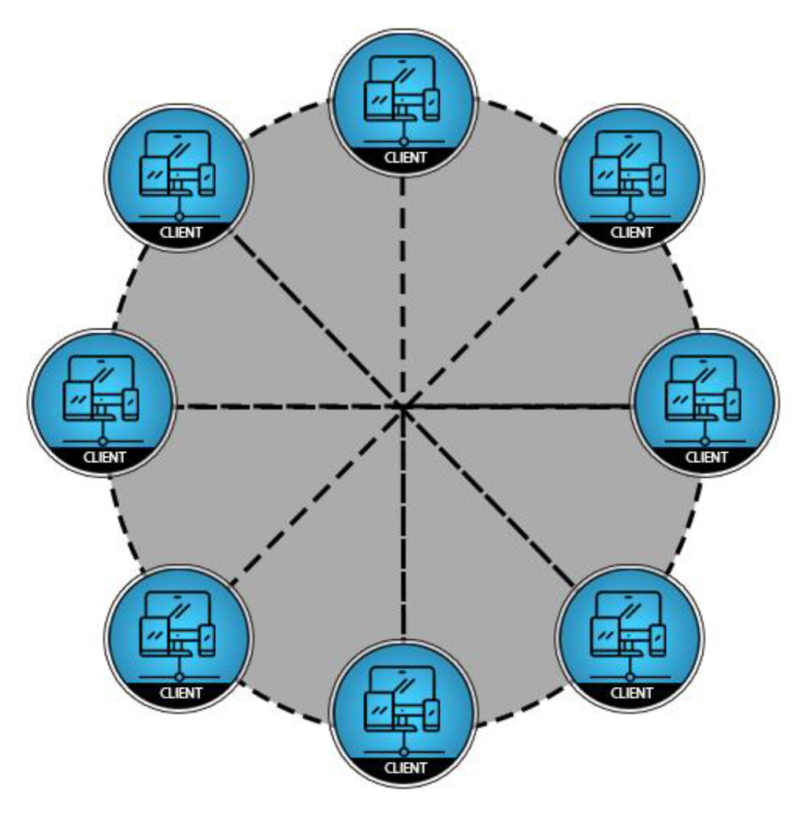
- 每个客户端向其他所有客户端广播游戏事件
- 鲁棒性
- 作弊更加容易
- 所有节点之间需要同步，以保持分布式游戏状态的一致性
后来开发者发现许多业务逻辑应当集中在一起处理，于是在原有 P2P 架构的基础上引入了主机服务器(host server)。
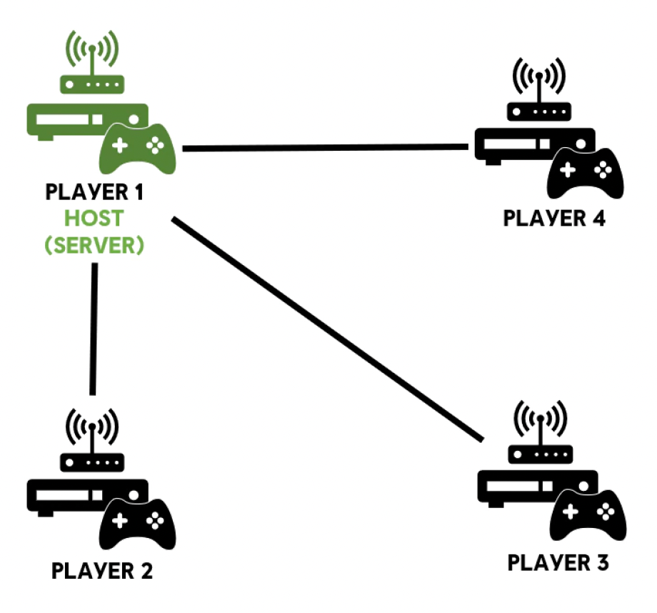
- 玩家可以充当“服务器”，称为主机
- 如果主机断开连接，游戏可能会结束
- 主机需要处理无法由玩家控制的游戏角色（比如 bot）
P2P 游戏代表

P2P 游戏具有以下特点：
- 不依赖于服务器
- 通常采用局域网（LAN）
- 基本上由主机控制会话
- 同时在线的玩家数量有限
Dedicated Server
但对于像 MMORPG 等更复杂的游戏类型，现在一般会采用专用服务器(dedicated server)架构，它的作用和特点是：

- 权威(authority)
- 模拟游戏世界
- 向玩家分派数据
- 高性能要求
P2P vs 专用服务器
| P2P | 专用服务器 | |
|---|---|---|
| 优点 | 1. 鲁棒性强 2. 消除多人游戏会话中的“服务器故障”问题 3. 无需额外的服务器成本 |
1. 易于维护且能防止作弊 2. 可以处理庞大的游戏世界 3. 游戏的响应速度不依赖于每个独立客户端的网络状况 |
| 缺点 | 1. 作弊更容易 2. 每个玩家都需要良好的网络连接才能使游戏正常运行 3. 只能处理有限数量的玩家 |
1. 服务器成本高昂 2. 服务器端程序的开发工作量大得多 3. 存在单点故障风险 |
当玩家在不同国家，相隔遥远，或者网络环境复杂时，RTT 就会很高。解决方法是使用专用线路(dedicated line)和边缘网关(edge gateway)来降低延迟。

Game Synchronization
在单机游戏中：
-
每个游戏 tick 中需要完成以下任务：

- 玩家输入
- 转换为游戏命令
- 游戏逻辑
- 游戏渲染
-
玩家关心的是

- 玩家输入
- 保持一致性
对于网络游戏，虽然玩家关心的东西还是一样的，但每个游戏 tick 要完成的任务变得更加复杂了。但不管如何，还是得通过游戏命令和游戏逻辑来实现不同终端玩家一起玩游戏。
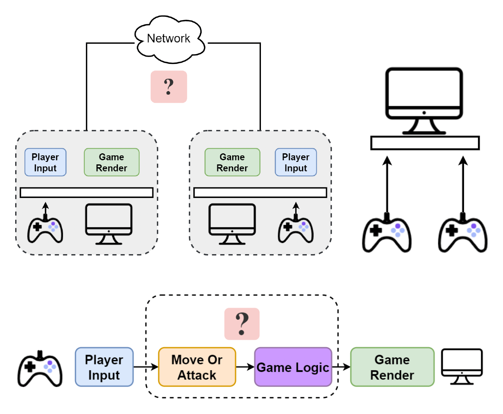
为了满足对响应策略的需求，游戏需要同步(synchronization)规则，以解决所有目标的延迟和一致性问题。
例子
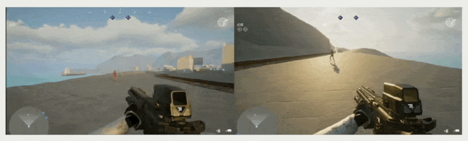
常用的同步方法有三种，分别是：
- 快照(snapshot)同步
- 锁步(lockstep)同步（帧同步）
- 状态(state)同步
下面将会详细分析这些方法。
Snapshot Synchronization
例子（Quake）

快照同步的步骤：
- 客户端向服务器发送输入
- 服务器模拟游戏世界，生成整个游戏状态快照，并将它们发送给客户端
- 客户端根据快照更新显示
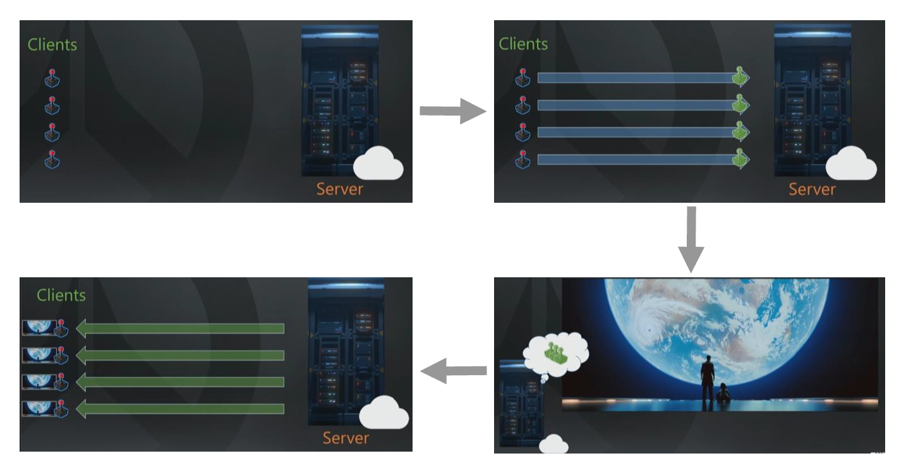
Snapshot Interpolation
出于对带宽和性能的考量，通常会限制服务器的 tick 速率，但这样做会出现画面抖动(jitters)和卡顿(hitches)的问题。
例子
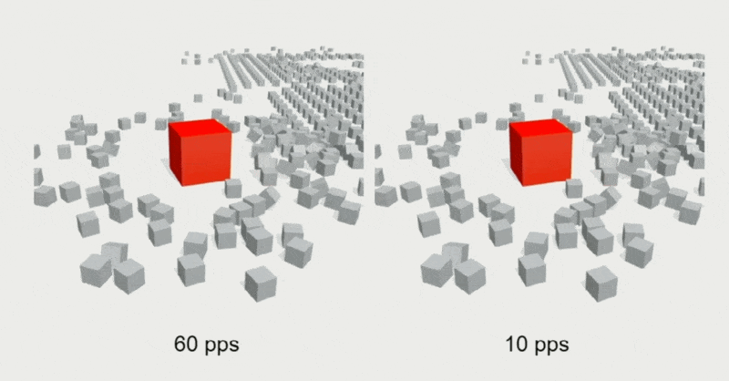
解决方案是在快照之间进行插值，使画面变化看起来更丝滑。具体细节为：
- 接收快照后不会立即渲染
- 保留一个插值缓冲区
- 在两个延迟快照之间进行插值
Delta Compression
快照同步的另一个问题是每个快照的数据量可能很大，若不做任何处理就会占据过多的内存带宽和空间。常见做法是采用增量压缩(delta compression)，即仅同步客户端的快照增量（两次连续快照的差值）。
Quake3 便采用了这种方法。

例子
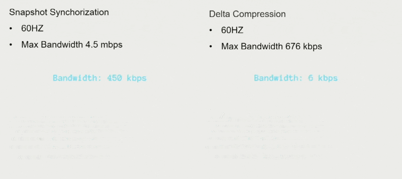
缺点
- 浪费客户端性能，而服务器压力大
- 数据量大，带宽要求高
- 随着游戏变得越来越复杂，快照也会变得越来越大
Lockstep Synchronization
「锁步」这一概念源自军队管理，是确保同步的一种最简单的方法，保证了同一时间下士兵采取相同行动，即结果相同。除非其他成员确定他们已经完成了任务，否则不允许任何成员提前推进模拟时钟。像下棋、打牌等回合制游戏都遵循这一原则。
显然，完全有序的交付(delivery)是确保不同节点之间游戏状态一致性的充分条件，因为它保证所有生成的事件都按照相同的唯一顺序可靠地交付。
在网络游戏中，锁步的原则是：相同的输入 + 相同的执行过程 = 相同的状态。
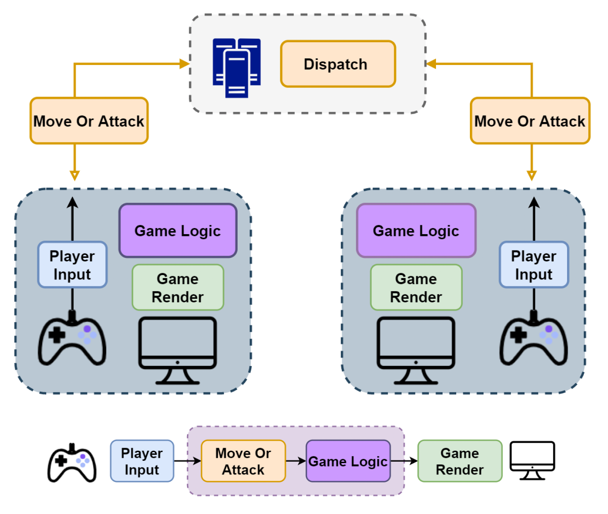
最早用到锁步思想的电子游戏是 DOOM（1994 年，采用 P2P 架构）。
锁步的初始化常常发生在游戏加载的时候，在这段时间中：
-
确保客户端的初始数据是确定性的(deterministic)
- 游戏模型
- 静态数据
- ...
-
同步时钟
Deterministic Lockstep
确定性锁步的流程如下：
- 客户端向服务器发送输入
- 服务器接收并排序；在转发之前等待所有客户端的输入
- 在从服务器接收数据后，客户端执行游戏逻辑

问题
若玩家 B 的消息 B2 到达较晚呢？（图中虚线标出的 B2）

- 游戏进度取决于最慢的玩家
- 游戏延迟不固定，体验不佳
-
如果有玩家离线，那么所有玩家都将进入等待状态
例子

优化方案是采用桶同步(bucket synchronization)。桶是指一个固定的时间段。每个桶需收集所有指令，并向所有玩家广播，无需等待所有玩家指令接收后再转发。

选择网络架构时，我们往往要考虑一致性(consistency)和交互性(interactivity)的权衡。一旦测得交互度低于给定阈值，就采取一些程序跳过处理过时的游戏事件，以恢复令人满意的交互水平。
确定性的挑战
- 浮点数
- 随机数
- 容器和算法（排序、添加、删除等）
- 数学工具（向量、四元数等）
- 物理模拟（非常困难）
- 代码逻辑执行顺序
浮点数
-
由于计算机是二进制编码的
- 所以这些数字能被精确表示：0.5, 0.25, 0.75, 0.875...
- 而这些数字只能被近似表示：2/3...
-
浮点数必须遵循 IEEE 754 标准
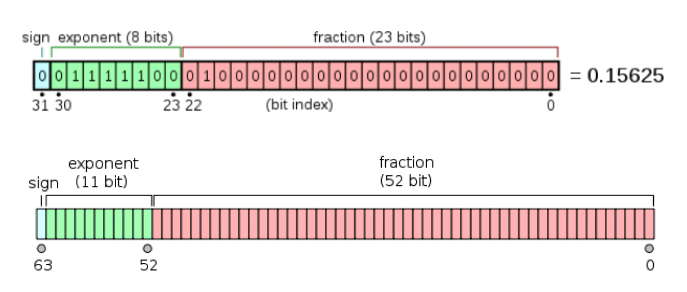
-
但在不同平台上有不同行为
-
硬件和 OS
- Intel / AMD
- PS / Xbox
- Windows / Linux
- Android / IOS
- ...
-
编译器
- 数学库（
sin,cos,tan,exp,pow...） - 第三方库组件
- 不同平台
- 不同版本
- 不同语言
- ...
- 数学库（
-
-
思路：避免精度边界问题，自定义精度
- 定点(fixed-point)数学库
- 查找表（三角函数等）
- 放大(amplification)和截断(truncation)
-
简单方法：
- 先乘以 1000，再除以 1000，但可能会溢出
- 分子和分母由定点数表示（比如 2/3）
- ...
-
定点数：

-
由三部分组成：一个可选的符号位、一个整数和一个小数部分
\[ V = (-1)^{b_{f+i}} \left( \sum_{n=0}^{i} 2^{n} b_{n+f} + \sum_{m=1}^{f} 2^{-m} b_{f-m} \right) \] -
需实现加减乘除等运算，以及类和类方法
- 还需考虑性能
-
随机数
游戏中的随机问题包括：
- 随机事件的触发，比如 NPC 的随机出生地
- 攻击的随机属性，比如暴击率
- ...
这些逻辑通常通过随机数实现。一种为多名玩家实现完全一致的随机逻辑的做法是使用伪随机数(pseudorandom)。
- 在游戏开始之前，初始化随机数种子
- 对于不同玩家的客户端，随机函数调用次数是固定的，生成的随机数是相同的
例子
int main() {
std::default_random_engine e;
std::uniform_int_distribution<int> u(0, 100);
e.seed(80);
for (int i = 0; i < 20; i++) {
std::cout << u(e) << std::endl;
}
return 0;
}

对应地，我们有以下确定性的实现途径：
- 用定点数表示关键游戏逻辑中的浮点数
- 确定性随机算法
- 确定性容器和算法（排序、添加、删除等）
- 确定性数学工具（向量、四元数等）
- 确定性物理模拟（非常困难）
- 确定性执行顺序
显然我们无法总是保证确定性一直成立，这时我们就要找出 bug。常用的追踪和调试手段有：
- 获取校验和(checksum)：所有数据的校验和，或仅计算关键数据的校验和
- 自动定位 bug：
- 服务器比较不同客户端的校验和
- 客户端上传 50 帧完整日志
- 通过比较日志找出不一致的地方
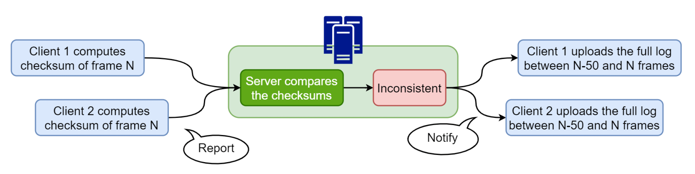
Lag and Delay
即便在帧同步中采用桶同步的优化措施，但还是有可能会出现延迟问题。因为网络通常是不稳定的，如果直到接收新的帧之前一直等待的话，就出现了延迟。解决方案有：
-
用缓冲区缓存帧：缓冲区越大，延迟越大（因为只有缓冲区满了才会显示里面的帧）；缓冲区越小，对延迟更敏感
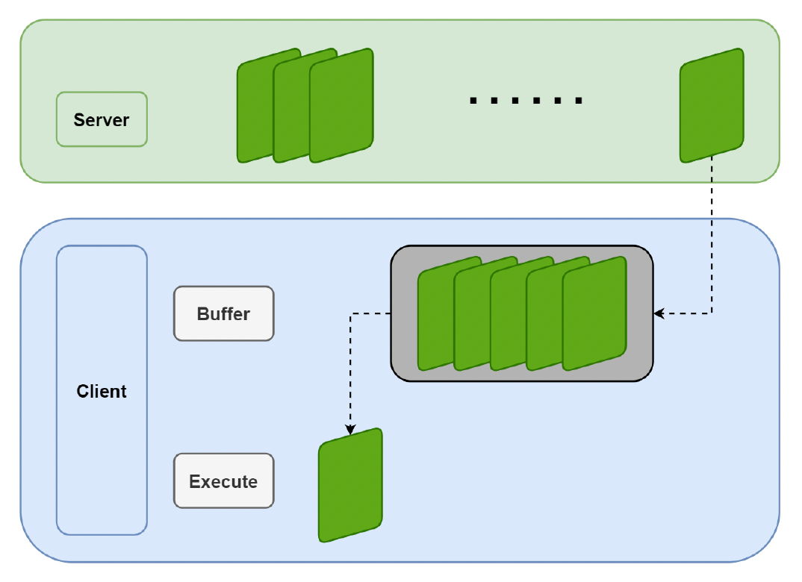
-
分离游戏逻辑和渲染

-
延迟问题的解决：
- 分离逻辑和渲染
- 本地客户端通过插值使画面变化更丝滑
-
帧率：
- 逻辑帧率通常在 10-30 fps 左右
- 渲染帧率通常更高
-
优点：
- 逻辑和渲染可以以不同频率独立运行
- 渲染卡顿不影响逻辑帧的操作
- 服务器可以通过运行逻辑帧来解决一些作弊问题
- 若服务器运行逻辑帧，可以保存关键帧快照以加速重连
-
Reconnection Problem

重连的三个阶段：离线(offline)、重连(reconnect)和追赶(catch up)。
客户端的游戏状态快照可以定期保存在本地客户端并序列化到磁盘。当重新连接发生时，将从磁盘的序列化数据中恢复游戏状态。获取快照后，服务器发送玩家命令，加速赶上游戏进度。这样的好处是不必从头开始恢复游戏状态，可以从断连的那一刻开始追赶。
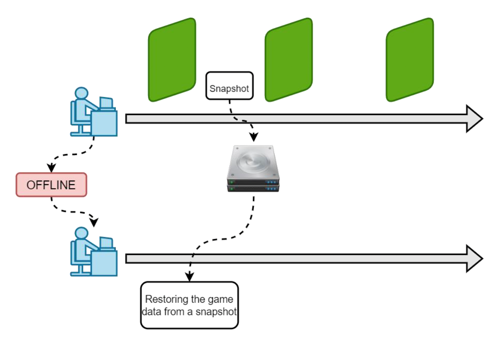
下面给出一段简单的关于快速追赶的实现代码：
float m_delta = 0;
float m_tick_delta = 100;
void CBattleLayer::update(float delta){
// do something
m_delta += delta;
int exec_count = 1;
while(m_delta >= m_tick_delta){
m_delta -= m_tick_delta;
// logic frame
if(!logicUpdate(LOGIC_TIME)){
return;
}
// catch up 10 frames at a time
if(exec_count++ >= 10){
break;
}
}
// do something
}
- 每次选择 10 帧
- 若初始为 10 fps，那么追赶时就是 100 fps
除了客户端外，服务器也可以保存快照。它会运行逻辑帧并保存关键帧快照。玩家断连后可在服务器发送快照后进行操作，之后也通过加速赶上游戏进度。

如果只是临时离线，则不会引起程序崩溃，因为客户端依然保留游戏状态、关键帧和确定性计时的帧。重连后，服务器向刚才断连的玩家发送一些命令，加速赶上游戏进度。
例子
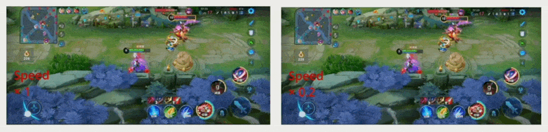
这项技术的另一项应用是观战模式，即观看其他玩家游玩。
- 这和重连本质上是一样的，观看就相当于客户端崩溃后的重连
- 将玩家的行动命令转发给观看游戏的玩家
- 观看通常会延迟几分钟，以防止屏幕偷看
例子
回放(replay)功能也是类似的。通过执行玩家们当时在游戏中的命令，可以加速回放的播放。
- 回放文件保存了一场游戏的游戏命令，仅占据很小的空间
- 实现回退的方式：
- 当客户端执行回放文件时，它会添加一个关键帧快照，可以回退到关键帧时刻
- 例子：《王者荣耀》当前版本（2022 年）可以回退到 60 秒前的关键帧
例子
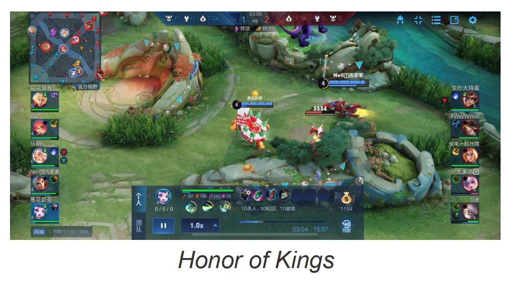
Lockstep Cheating Issues
-
多人 PvP
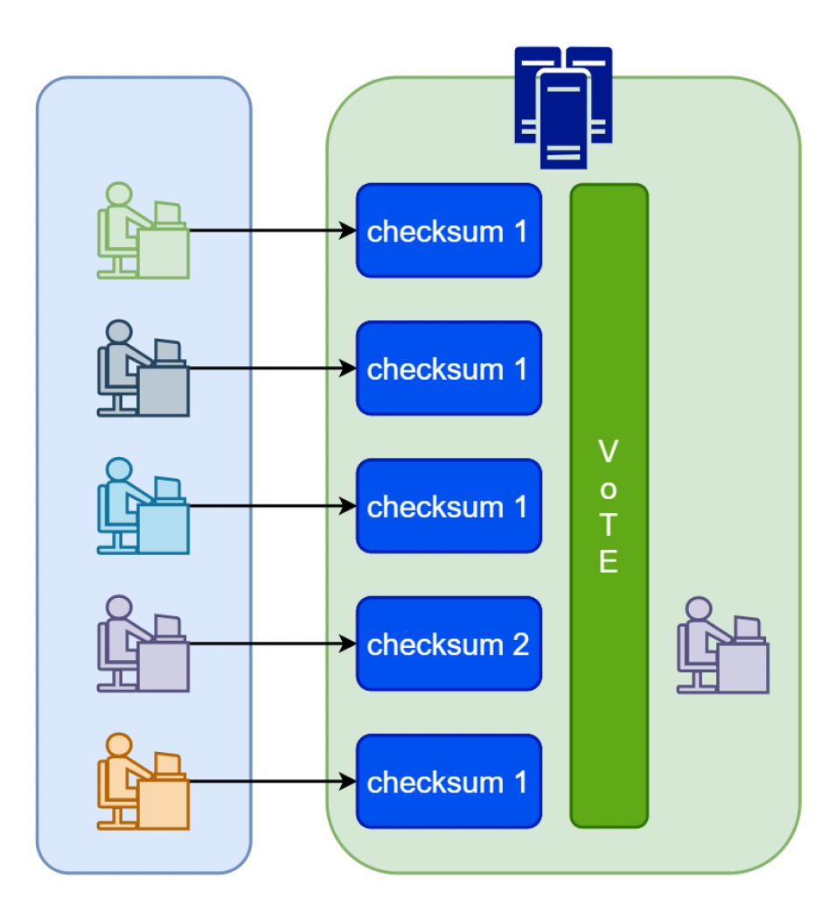
- 游戏结束时，客户端会上传密钥数据校验和，服务器验证游戏结果
- 游戏进行时，客户端报告密钥数据校验和，作弊的玩家会被踢出等等
-
双人模式

- 服务器无法通过密钥数据校验和来检测谁在作弊
- 如果服务器未被验证，那么作弊玩家在这种情况下只会影响一个玩家
-
难以避免访问战争迷雾(war-fog)（玩家视野有限）或其他隐藏数据的第三方插件
- 游戏逻辑在客户端执行
- 客户端拥有所有游戏数据

总结
优点
- 因为仅发送命令，所以带宽小
- 类似于单人游戏开发的高开发效率
- 精确的动作/命中检测
- 便于游戏录制
问题
- 难以保持一致性
- 很难解决显示所有游戏状态的作弊插件的问题
- 断连和重连时间更长，需要更复杂的优化
State Synchronization
游戏状态(states)对表示游戏世界而言是必需的。在状态同步中，
- 服务器不会为所有客户端生成单个更新，而是向客户端发送定制的数据包
- 如果游戏世界过于复杂，可以通过设置兴趣区域(area of interest, AOI)来减少服务器开销
状态同步最大的特点是由服务器管控整个游戏世界。

- 服务器：接收来自客户端的输入和状态，运行游戏逻辑，然后发送状态
- 客户端：接收数据并模拟游戏世界，游戏玩法的提升
相关概念
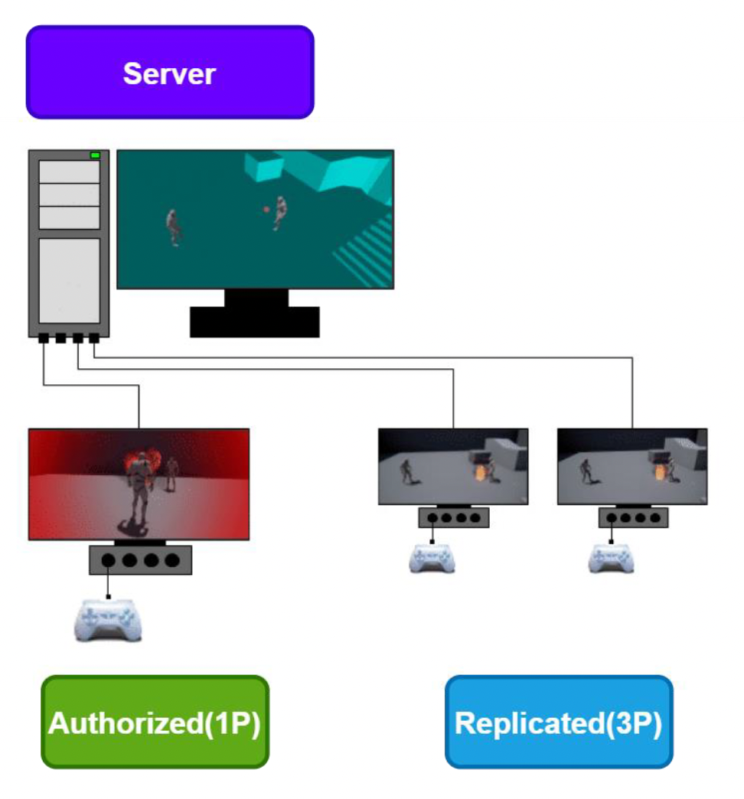
- 授权(authorized)客户端（1P）：玩家本地游戏客户端（玩家自己操纵的）
- 服务器：授权服务器
- 复制(replicated)客户端（3P）：在其他玩家客户端中模拟的角色（其他玩家看到的）
例子
左右两张图分别对应（授权）玩家 1（准备开火）和（复制）玩家 2（观察玩家 1 开火）：
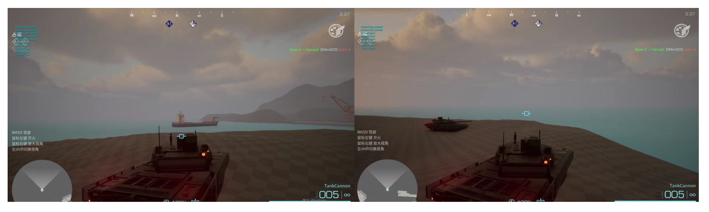
玩家 1 在本地机器上按下按钮开火时经历了这样一个过程：
- 玩家 1：开火，发送给服务器
- 服务器：玩家 1 开火，发送给各个客户端
- 玩家 2：接收数据包，看到玩家 1 开火

服务器告诉每个客户端以复现玩家 1 炮弹的移动：

并且服务器告诉所有客户端要响应来自炮弹的破坏：

Dumb Client Problem
愚笨客户端问题(dumb client problem)：客户端在收到服务器状态更新之前无法进行任何操作。

要想实现立即响应，可通过以下流程实现：
-
客户端预测(client-side prediction)：对于授权客户端，假如按下 "->" 键，可以在未收到服务器消息的情况下先向右移动一段距离，等接收到消息时再和服务器的响应内容对齐
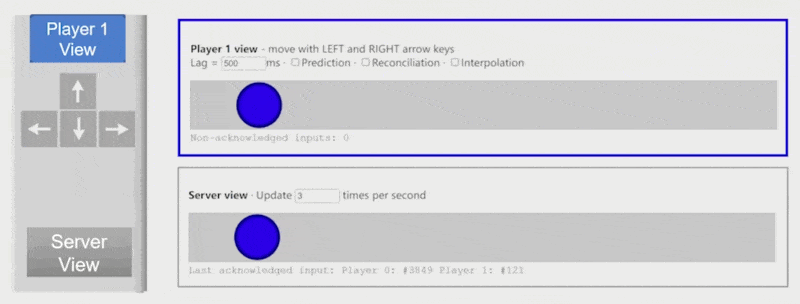
例子
《守望先锋》的策略是：估计 RTT 为 160ms，并设定客户端总是领先服务器半个 RTT + 一条缓存命令帧的时间，即 80 + 16 = 96ms。因此玩家按下按钮后能够被立即响应。
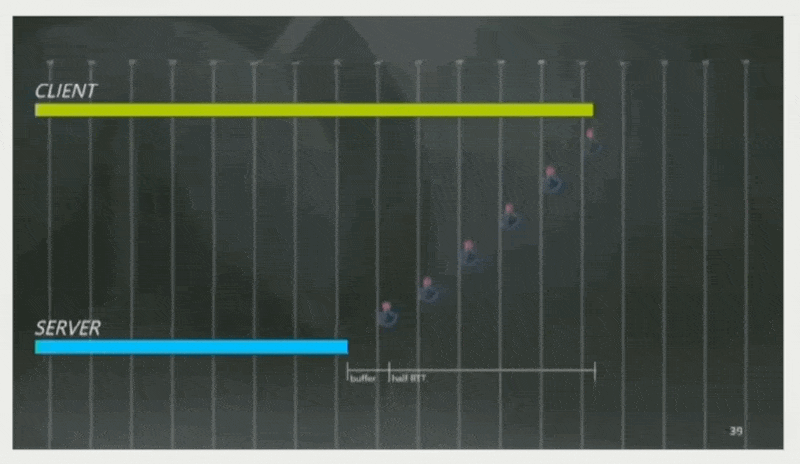
-
服务器和解(server reconciliation)
-
授权客户端：缓存(buffer)
- 客户端做预测时记录每个状态（便于回退）
- 当接收来自客户端的数据时和服务器过去的数据比较
-
环形状态缓存：存储客户端前几帧的所有状态
例子
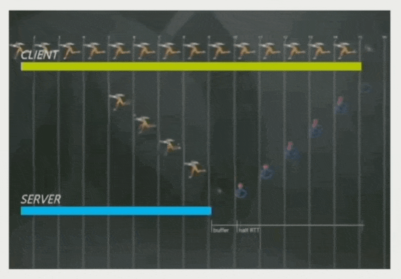
-
进程：若客户端的计算结果与服务器一致，客户端就可以顺利继续模拟下一次输入
-
问题：误预测(misprediction)
-
如下图所示，若服务器这边的游戏中有一堵墙，那么客户端先前预测的位置就错了，此时客户端必须接受新的服务器更新，并重新追踪所有从新的确认点开始的预测移动

-
若客户端与服务器的结果不一致，意味着预测错误，需要和解
- 环形输入缓存：存储客户端前几帧的所有输入
- 进程：用服务器结果覆写客户端结果，并重放所有输入，以赶上可确定的内容
-
例子
还是以《守望先锋》为例。被武器冻住的玩家尝试移动，但服务器不允许，于是玩家只能定在原地。
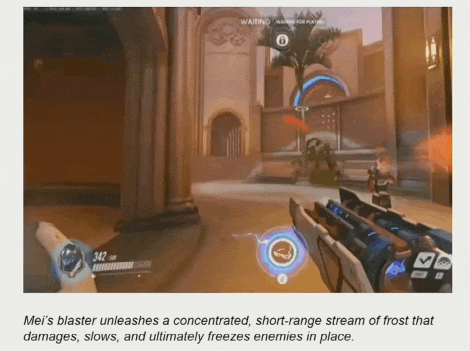
-
Packet Loss
另外还得考虑丢包(packet loss)的问题，即客户端输入的数据包未能抵达服务器。
- 服务器尝试保持一个用于存放未处理输入的小型输入缓冲区
- 如果服务器用完了输入缓冲区，服务器将在窗口中重复最后输入
- 推送客户端尽快发送丢失的输入
状态同步 vs 帧同步
| 状态同步 | 帧同步 | |
|---|---|---|
| 确定性逻辑 | 不需要 | 必要 |
| 响应速度 | 更快 | 更慢 |
| 网络流量 | 通常较高 | 通常较低 |
| 开发效率 | 复杂得多 | 开发容易，调试困难 |
| 玩家数量 | 少量玩家 | 支持少量或大量玩家 |
| 跨平台 | 相对容易 | 相对困难 |
| 断线重连 | 相对容易 | 相对困难 |
| 回放文件大小 | 大 | 小 |
| 作弊 | 相对困难 | 相对容易 |
评论区